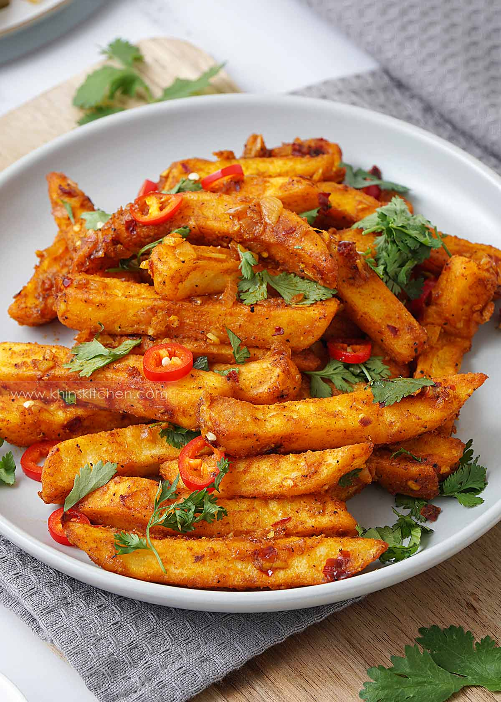

Masala Chips

Description
Crispy golden fried potato chips with flavourful Indian style masala sauce, which has a spicy, tangy, curry taste.
Ingredients
- Potato Chips
- Masala Sauce
- Curry powder
- Chilli
- Garnish
Steps:
- Fry or bake the chips until crispy golden coloured
- In a large non-stick wok/pan, saute the onion and garlic with low-medium heat until light brown.
- Next add the spices, turmeric, curry powder, black pepper, and dried chilli flakes. Saute for few seconds until fragrant.
- Stir in tomato ketchup, salt, and water. Cook until the sauce starts to get thick.
- When the masala sauce is ready, add the fried potato chips and tossed well to combine everything evenly.
- Turn off the heat and sprinkle chopped coriander and chilli slices. Serve immediately while hot.